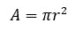

2.4 Оформлення формул та рівнянь
Формули
та рівняння розташовують безпосередньо після тексту, в якому вони згадуються,
посередині сторінки (допускається для рукописного тексту розташовувати формули з
абзацного відступу). Вище і нижче кожної формули або рівняння, а також пояснення
до них, повинно бути залишено не менше одного рядка.
Формули
при машинному оформленні в текст вписуються за допомогою редактора формул
розміром однаковим з розміром тексту. Рекомендується використовувати один
редактор на весь документ, наприклад Microsoft Word або Match Type.
Формули
і рівняння в документі слід нумерувати порядковою нумерацією в межах документу.
Номер формули або рівняння зазначають на
рівні формули або рівняння в дужках в крайньому правому положенні на рядку
(однаково для всіх формул).
Пояснення
значень символів і числових коефіцієнтів, що входять до формули чи рівняння слід
наводити безпосередньо під формулою у тій послідовності, в якій вони наведені у
формулі чи рівнянні. Пояснення значення кожного символу та числового коефіцієнту
слід давати з нового рядка. Перший рядок пояснення починають з абзацу словом
«де» без двокрапки, а наступні рядки пояснень розміщують на одному рівні з
символами першого рядка. Якщо пояснення символу не вміщується в один рядок,
початок другого рядка розміщувати з абзацного відступу. Приклад
Відомо,
що
 ,
(1)
r
–
радіус кола.